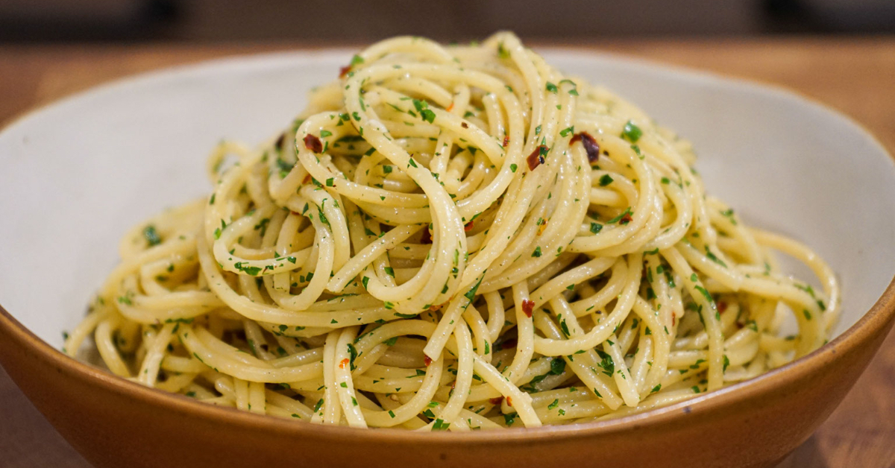

Delicious Pasta Recipes
From creamy classics to bold and spicy favorites, these recipes are designed to celebrate the pasta shapes and sauces you've already explored. Whether you're craving comfort or looking to try something new, there's a perfect pasta dish waiting for you below.

Spaghetti Aglio e Olio
Pasta: Spaghetti
Sauce: Olive oil, garlic, red pepper flakes
Ingredients:
- 400g spaghetti
- 4 garlic cloves, thinly sliced
- 1/2 tsp red pepper flakes (adjust to taste)
- 1/4 cup extra virgin olive oil
- Salt
- Fresh parsley (optional)
- Fresh parsley (optional)
Instructions:
- Cook spaghetti in salted boiling water until al dente. Reserve 1/2 cup pasta water.
- In a pan, heat olive oil and gently sauté garlic until golden (not brown).
- Add red pepper flakes and a splash of pasta water.
- Toss in drained spaghetti, stirring to coat. Add more water if needed for glossiness.
- Garnish with chopped parsley and Parmesan if desired.

Fettuccine Alfredo
Pasta: Fettuccine
Sauce: Cream-based Alfredo
Ingredients:
- 300g fettuccine
- 1/2 cup unsalted butter
- 1 cup heavy cream
- 1 cup freshly grated Parmesan cheese
- Salt, pepper
Instructions:
- Cook pasta and reserve 1/4 cup pasta water.
- In a pan, melt butter and add cream. Simmer 3–4 minutes.
- Stir in Parmesan until melted. Add pasta water for consistency.
- Toss in fettuccine and season with salt and pepper to taste.
- Serve warm with extra cheese.